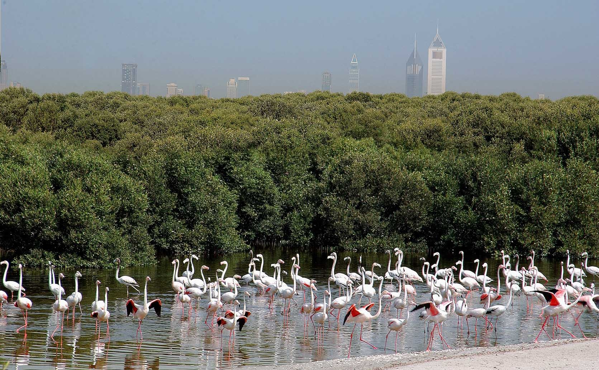
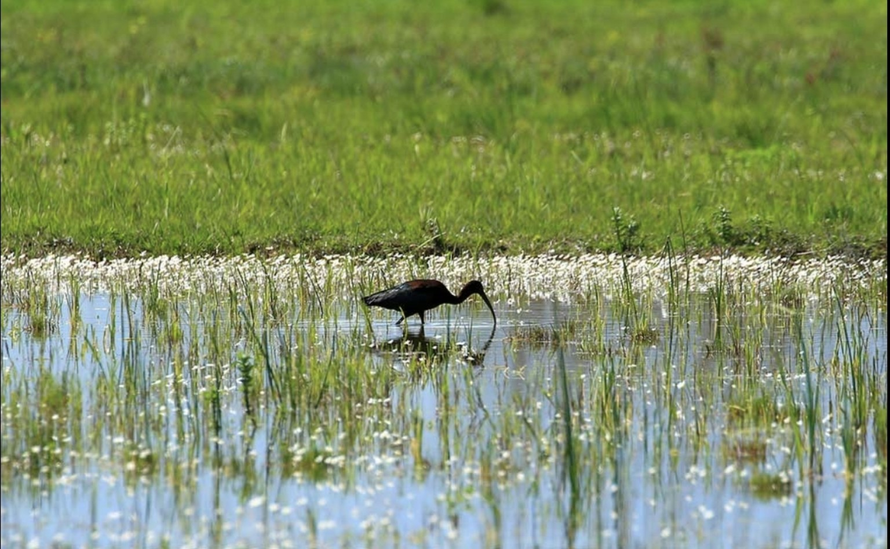
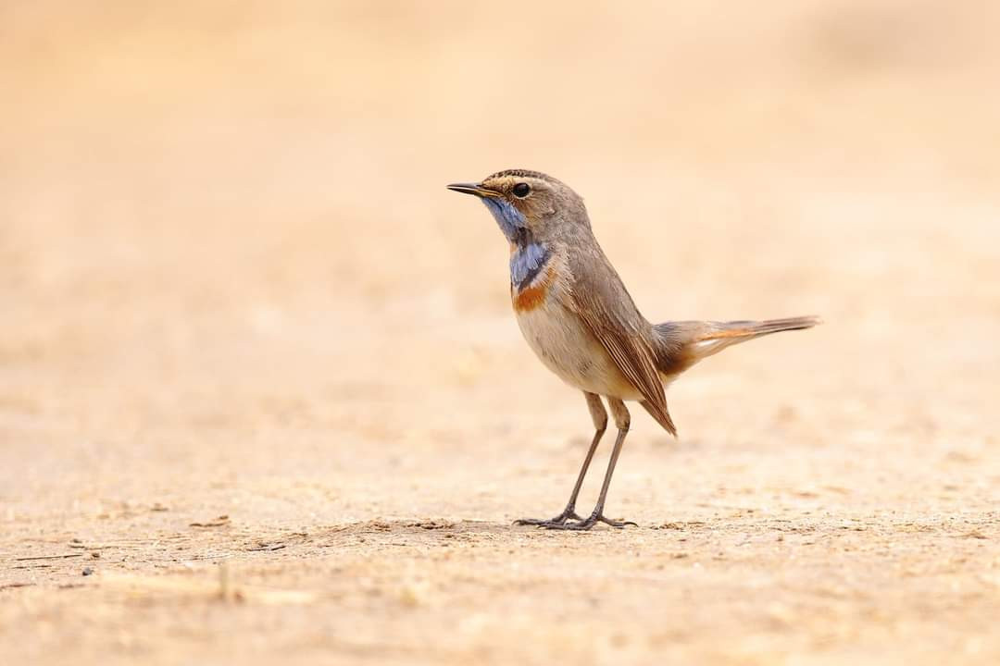
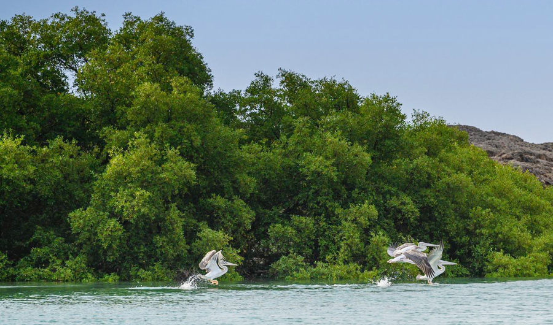
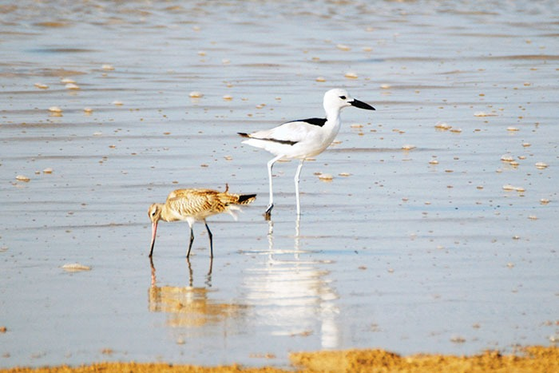

WWF
Major migration refuges in the Mashreq and Arabian Peninsula
The greater spotted eagle has returned to Kuwait’s Jahra Reserve with the autumn migration season of 2026. Its arrival signals more than the start of a season: a bird travelling long distances has found water, food and somewhere to spend the winter. From Jahra to the wetlands of the Bekaa, Iraq’s marshes and the Arabian coast, these places help make migration possible.
World Migratory Bird Day highlights this journey and its need for safe habitats. From the Mashreq to the Arabian Peninsula, we explore some of the major refuges: some provide brief stops to replenish energy; others accommodate birds for months. Routes vary between species: shorebirds need productive shores, ducks suitable waters, and raptors areas offering prey and quiet.
Kuwait | Jahra: winter among water and reeds
The Kuwait Environment Protection Society’s bird team recorded the first greater spotted eagle at Jahra Reserve this season. This raptor uses wetlands during winter, benefiting from food and resting places.
Jahra combines shallow waters, reeds and open ground, attracting birds of different sizes and feeding habits. Its value extends beyond the sight of a rare bird: it illustrates the need for a complete habitat usable throughout the season, supported by continued monitoring and protection.
Lebanon | Aammiq: a pause in the Bekaa

Reuters — Ali Hashisho
In the Bekaa Valley, Aammiq provides migrating birds with water, reeds and meadows within a broad agricultural landscape. Lebanon’s largest natural freshwater wetland is an important site for passage, feeding and roosting.
Ducks, herons and other waterbirds find different resources within this diversity, while other birds use the surrounding land. The glossy ibis, searching shallow water with its curved bill, illustrates the relationship between bird and habitat. Protecting this refuge means caring for water, vegetation and surrounding farmland, and preventing poaching and disturbance at gathering sites.
Jordan | Azraq and Aqaba: an oasis and a seaside stop

Birdingplaces
Azraq Oasis, in the eastern desert, attracts birds seeking water. Its pools and vegetation offer waterbirds and passing migrants opportunities to feed and rest; maintaining water is central to its ecological role.
Further south, Aqaba Bird Observatory provides another stop where desert meets sea. An agreement between the Royal Society for the Conservation of Nature and UNDP at the start of October supports the sustainability of its habitats. Together, the two sites illustrate natural habitat protection and restoration in a region where every wetland matters.
Syria | Jabbul: refuge in shallow waters
East of Aleppo, Sabkhat al-Jabbul is one of Syria’s major wetlands. The shallow saline lake, its margins and islands provide waterbirds with places for passage and wintering, including flamingos and duck species.
Different depths and margins allow birds to stand, forage and find quiet. Protecting Jabbul therefore requires maintaining its water and ecological characteristics, together with the surrounding areas used by birds.
Iraq | The marshes: reeds and open water
In southern Iraq, Hawizeh, Hammar and the Central Marshes offer extensive reeds, open water and shallow wetlands. They form an important part of the network used by waterbirds during migration and winter.
This diversity provides feeding, shelter and roosting sites for ducks and other waterbirds. Marsh life depends on water flows and quality, and on surrounding communities. Protection involves managing resources, responsible hunting, and preserving the extent and connections of wetland habitats.
Saudi Arabia | Farasan: stops on the Red Sea

واس
Off Jazan, the Farasan Islands combine mangroves, sandy and muddy shores, and coastal salt flats. These habitats offer waterbirds and shorebirds several places to feed and rest along the Red Sea routes they use.
Winter counts demonstrate the importance of field monitoring. Birds seen above the coast also depend on food in mud and shallow water, and on quiet shores. Protecting Farasan means preserving these details, from mangroves to gathering and roosting areas.
Oman | Barr al Hikman: a table revealed by the tide

Times of Oman
In Al Wusta Governorate, Barr al Hikman’s mudflats extend along coasts rich in life. Receding tides reveal broad feeding areas, making the site a major winter refuge for shorebirds in the region.
These birds depend on the tidal cycle: they feed on exposed mud and gather on higher ground as water rises. Feeding areas and nearby resting sites therefore need protection together. Disturbance that repeatedly forces flocks into flight consumes energy needed for their stay and onward journey.
United Arab Emirates | Ras Al Khor: refuge beside the city
In Dubai, Ras Al Khor offers a striking view of birds against the city. Its wetlands and shallow waters host flamingos feeding on small organisms in habitat providing food and rest.
Ras Al Khor illustrates the importance of retaining space for nature within cities. Water alone is insufficient: birds need healthy habitat, quiet areas and managed viewing that allows visitors to enjoy the flocks without disturbing them.
Every observation helps
These sites are examples within a wider network supporting migration. This year’s occasion stresses the importance of every bird and observation. Birdwatchers, photographers and responsible hunters can contribute by recording species, location and date, keeping their distance and reporting violations. Protecting the journey begins with knowing where birds stop, then keeping those places safe.